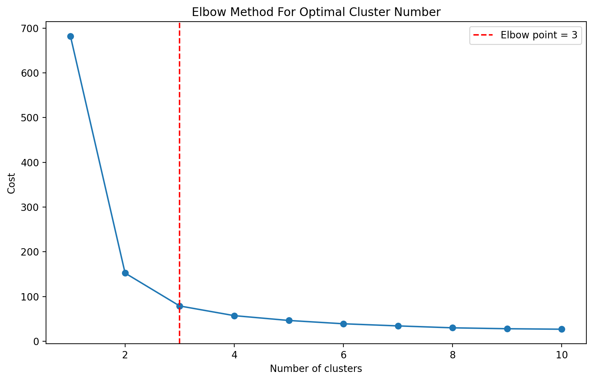
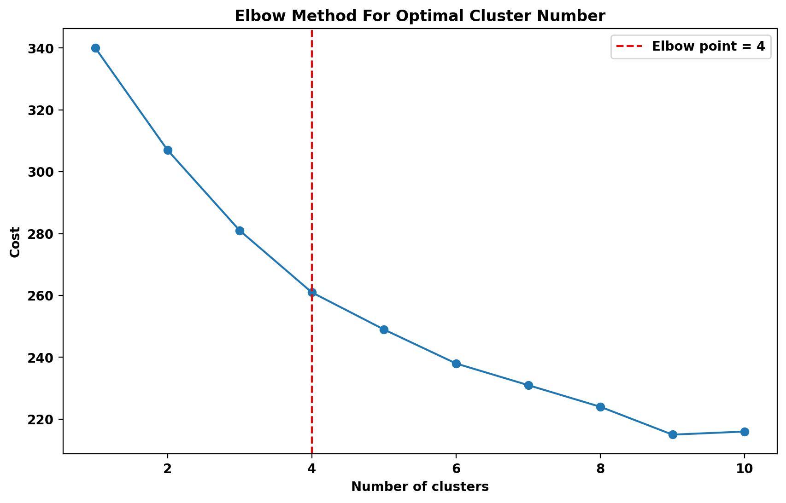
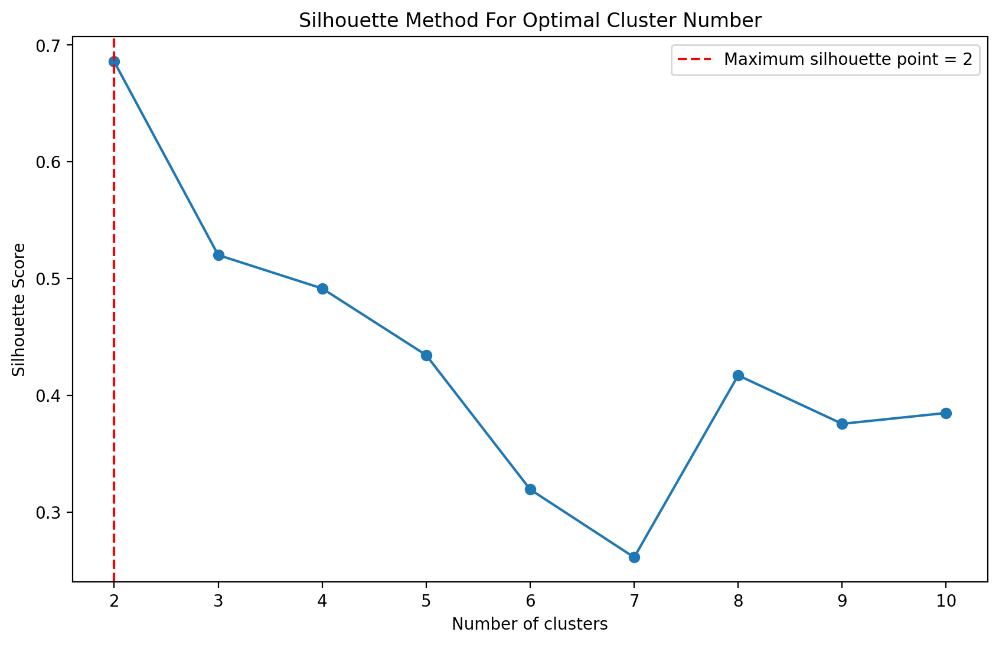
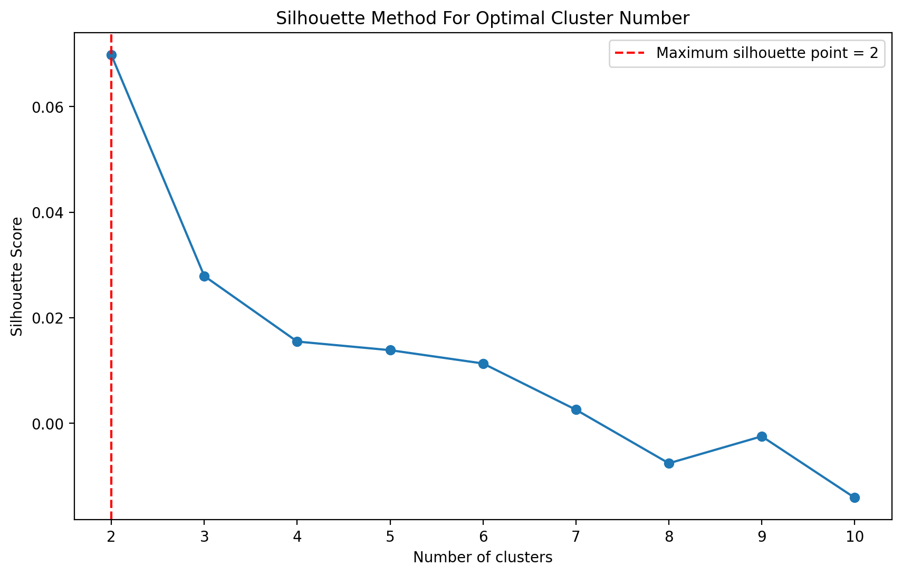
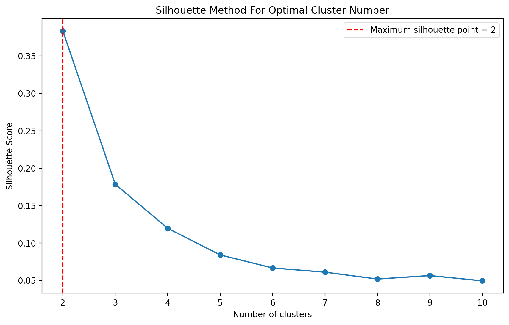

The cluster module
Optimal Number of Clusters Searcher
- class NClusterSearch(estimator, method='elbow', *, min_clusters=1, max_clusters=10, step=1, random_state=123, verbose=False)
NClusterSearch
A helper class to identify the optimal number of clusters for clustering algorithms.
- __init__(estimator, method='elbow', *, min_clusters=1, max_clusters=10, step=1, random_state=123, verbose=False)
- Parameters:
estimator (object) – The clustering algorithm for which you want to find the optimal number of clusters. Supported estimators: KMeans, KMedoids, KModes, KPrototypes.
method (str) – The method used to determine the optimal number of clusters. Accepted values: ‘elbow’, ‘silhouette’. Default: “elbow”.
min_clusters (int) – The minimum number of clusters to consider. Default: 1.
max_clusters (int) – The maximum number of clusters to consider. Default: 10.
step (int) – The step size for increasing the number of clusters during the search. Default: 1.
random_state (int) – Random seed for reproducibility. Default: 123.
verbose (bool) – If True, the process will print details as it proceeds. Default: False.
- fit(X, **kwargs)
Fits the estimator with the data over a range of cluster numbers.
- Parameters:
X (array-like) – The data to determine the optimal number of clusters for.
**kwargs –
Additional keyword arguments to be passed to the estimator’s fit method.
- Returns:
Returns an instance of NClusterSearch().
- Return type:
object
- plot(ax=None)
Plots the results of the selected method (either ‘elbow’ or ‘silhouette’) to visualize the optimal cluster number.
- Parameters:
ax (object) – Axis on which to draw the plot. If None, a new figure and axis will be created. Default: None.
- predict(X, **kwargs)
Predicts the closest cluster for each sample in X using the best_estimator_.
- Parameters:
X (array-like) – New data to predict cluster labels.
**kwargs –
Additional keyword arguments to be passed to the estimator’s predict method.
- Returns:
Index of the cluster each sample belongs to.
- Return type:
array
- best_estimator_
- Returns the estimator with the optimal number of clusters.
- labels_
- Returns the labels of each point for the best estimator.
Examples:
Example 1: Using the elbow method with KMeans
from sklearn.cluster import KMeans from sklearn.datasets import load_iris from estyp.cluster import NClusterSearch data = load_iris().data new_data = load_iris().data[:10] searcher = NClusterSearch(estimator=KMeans(), method='elbow') searcher.fit(data) labels = searcher.labels_ predicted_labels = searcher.predict(new_data) optimal_model = searcher.best_estimator_ optimal_clusters = searcher.optimal_clusters_ searcher.plot()
Looking for help? Visit the ESTYP documentation: https://estyp.readthedocs.io/
Example 2: Using KModes with custom arguments
from kmodes.kmodes import KModes import pandas as pd import numpy as np np.random.seed(2023) data = pd.DataFrame(np.random.randint(0, 10, size=(100, 4))).apply(lambda x: x.astype('object')) kmodes = KModes(init='Huang', n_init=5) searcher = NClusterSearch(estimator=kmodes, method='elbow') searcher.fit(data) searcher.plot()
Example 3: Using the silhouette method with KMedoids
from sklearn.datasets import load_iris from sklearn_extra.cluster import KMedoids data = load_iris().data searcher = NClusterSearch(estimator=KMedoids(), method='silhouette') searcher.fit(data) searcher.plot()
Example 4: Using the silhouette method with KPrototypes
import pandas as pd import numpy as np from kmodes.kprototypes import KPrototypes np.random.seed(2023) data = pd.DataFrame(np.random.randint(0, 10, size=(100, 4))).apply(lambda x: x.astype('object')) data["new"] = np.random.randint(0, 10, size=(100, 1)) searcher = NClusterSearch(estimator=KPrototypes(), method='silhouette', verbose=True) searcher.fit(data, categorical=[0, 1, 2, 3]) searcher.plot()
Calculating silhouette scores... Creating distance matrix...
Example 5: Using the silhouette method with KPrototypes and custom alpha for distance calculation
import pandas as pd import numpy as np from kmodes.kprototypes import KPrototypes np.random.seed(2023) data = pd.DataFrame(np.random.randint(0, 10, size=(100, 4))).apply(lambda x: x.astype('object')) data["new"] = np.random.randint(0, 10, size=(100, 1)) searcher = NClusterSearch(estimator=KPrototypes(), method='silhouette') searcher.fit(data, categorical=[0, 1, 2, 3], alpha=0.1) searcher.plot()
